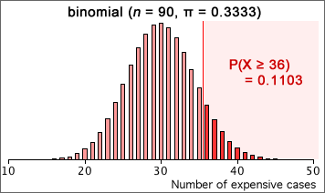

Design of CD case
In an experiment comparing three CD cases, all three designs were offered for sale in a CD store for the same price. Out of the first 90 CDs that were purchased, 36 were for the more expensive design. Testing for whether there is any preference for the more expensive case involves the probability of this case being selected, π.
H0: π = 1/3 (no preference)
HA: π > 1/3 (preference for expensive case)
If there is no preference, the number of expensive cases purchased will be binomial with π = 1/3 and n = 90.

The p-value for the test is the probability of getting as 'extreme' a count as was observed if there was no preference, 0.1103. Since this is high, we conclude that there is no evidence of preference for the more expensive case from the data.
Interpretation of p-values
A p-value only tells you whether the data are consistent with the null hypothesis or are inconsistent with it. From a very small p-value, we can conclude that the null hypothesis is probably wrong. However a high p-value does not mean that the null hypothesis is correct, only that the observed data are consistent with it. In the CD case example, we could never be sure that π was not very very slightly different from 1/3.
A hypothesis test should never conclude that the null hypothesis is correct.
For the telepathy example, the correct interpretation of p-values would be...
| p-value | Conclusion |
|---|---|
| p > 0.1 | There is no evidence against π = 1/3. |
| 0.05 < p < 0.1 | There is only slight evidence against π = 1/3. |
| 0.01 < p < 0.05 | There is moderately strong evidence against π = 1/3. |
| p < 0.01 | There is strong evidence against π = 1/3. |